Sväng och gå framåt – ända fram till nöten.
Gratis · ingen inloggning · skolappar.com
Matematik, åk 1–3, centralt innehåll: ”Entydiga stegvisa instruktioner och hur de konstrueras, beskrivs och följs som grund för programmering. Hur symboler används vid stegvisa instruktioner.”
Två symboler betyder sväng vänster och sväng höger, en betyder gå framåt. Barnet bygger en följd av instruktioner genom att trycka på dem, och ser direkt vad följden gör: Kotten vrider sig ett kvarts varv eller tar ett steg i den riktning pilen pekar. Fyra svängar åt samma håll blir ett helt varv. Nivåerna lägger till längre vägar, två nötter i rad och stubbar som står i vägen – aldrig kortare tid eller fler val än så. Fel steg kostar inget: Kotten stöter emot, gör en ny chans, och efter en stund pulserar rätt knapp. Inget måste läsas. Källa: Skolverket, läroplanen för grundskolan (Lgr22).